π0: Vision-Language-Action Flow Model 论文机制图解
这份主报告按 C:\Users\tianxl\paper_imagegen_prompt_template.md 的最新要求交付：20 张 ImageGen 机制图全部嵌入正文，围绕模型架构、核心模块、关键公式/loss、训练与推理逻辑、代码实现映射组织，不写流程日志和失败重试细节。
20 张最终 PNG，统一浅底中文技术图解风格。
arXiv 2410.24164，本地 TeX 源码：
C:\Users\tianxl\.cache\nanochat\knowledge\2410.24164\main.tex。任务定义、总架构、Action Expert、flow matching loss、Euler 推理、tensor shape、代码映射。
左侧固定目录、滚动高亮、宽正文区域、图片点击放大、MathJax 渲染公式。
第一步：论文机制提炼
| 项目 | 提炼结果 |
|---|---|
| 任务定义 | 学习机器人策略分布 。观测 ，输出未来动作块 ，论文任务中 。 |
| 总体方法 | 以 PaliGemma VLM 为基础，加入机器人状态 token、噪声动作 token 和 Action Expert，用 conditional flow matching 生成连续动作块。 |
| 核心创新 | 把 VLM 语义能力、跨机器人数据、连续 flow 动作块、专门的机器人动作专家组合成一个 VLA flow model。 |
| 关键模块 | VLM Expert、Action Expert、τ 嵌入 MLP、blockwise causal attention mask、vector-field output head、Euler sampler。 |
| 关键 loss | 监督模型预测向量场 ，使它逼近目标向量场 。 |
| 训练流程 | 从 batch 取 ，采样 和 ，构造 ，前向输出 ，计算 flow matching loss 并反传。 |
| 推理流程 | 从 开始，执行 10 步 Euler 积分，每步用模型预测向量场，最终得到动作块。 |
| 实现要点 | 注意 padding/mask、τ 采样分布、τ 端点、attention mask、prefix K/V cache、action chunk 开环执行。 |
第二步：20 图 Storyboard
20 张图按模板要求覆盖任务定义、动机、总架构、数据表示、主干编码器、核心模块、信息流、输出头、关键公式、loss 连接、训练/反传、推理、tensor shape、代码映射和复现风险。
| 图号 | 图名 | 对应机制 | 代码映射 |
|---|---|---|---|
| 1 | 任务定义 | 输入 、输出 、目标 | dataset batch schema |
| 2 | 动机 | 离散自回归动作 vs 连续 flow 动作块 | policy output design |
| 3 | 总架构 | VLM Expert + Action Expert + vector field | Pi0Model.forward |
| 4 | 数据表示 | 跨机器人 padding/mask | RobotDataset |
| 5 | VLM 编码器 | 图像/语言共享嵌入 | ImageTextProcessor |
| 6 | Action Expert | 机器人专用权重 | ActionExpert |
| 7 | Flow token | 每个未来动作一个 noisy action token | action token sequence |
| 8 | τ 嵌入 | 融合 和 | TauEmbedMLP |
| 9 | 注意力 mask | 三块 blockwise causal mask | attention mask builder |
| 10 | 输出头 | 读取动作位置输出 | OutputHead |
| 11-14 | 公式/loss | flow loss、noisy path、τ 采样、loss 连接 | compute_loss |
| 15-17 | 训练/推理 | forward、backward、Euler integration | training_step, euler_sample |
| 18-20 | 实现与风险 | shape、代码结构、易错点 | reproduction checklist |
图1：任务定义与输入输出
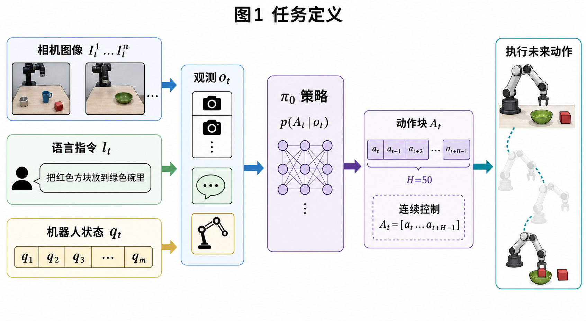
先看哪里：从左侧三类输入沿箭头看向中央 策略，再看右侧动作块。
- 模块作用：图像提供场景，语言给任务目标，状态 提供本体感知。
- 公式变量： 是观测， 是未来动作块，目标是 。
- 训练关系：训练样本就是 。
- 代码映射：
RobotDataset.__getitem__返回 obs 和 action chunk。 - 关键 shape：，论文任务中 。
- 易误解点：π0 不是只预测下一个动作，而是预测一个未来动作块。
图2：Baseline 局限与论文动机
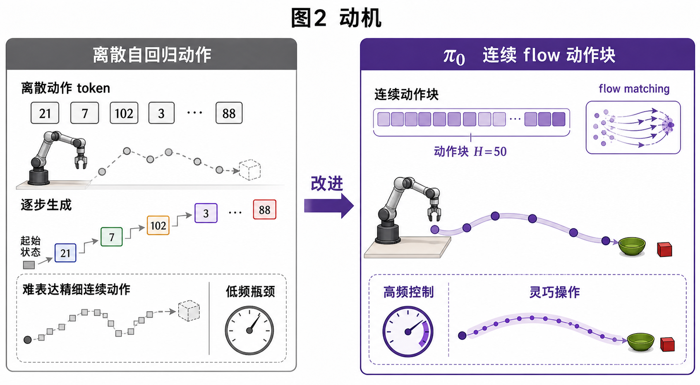
先看哪里：左侧离散 token 的阶梯路径，再看右侧连续轨迹。
- 模块作用：对比动作表示方式，而不是比较某个单独网络层。
- 公式变量：右侧对应连续 和向量场 。
- 训练关系：flow loss 直接约束连续动作空间中的方向。
- 代码映射：输出头返回
[B,H,d]连续张量，而非离散 token id。 - 关键 shape：动作 chunk 是 。
- 易误解点：这里不是说所有自回归模型都不可用，而是论文强调高频灵巧控制需要 action chunk 和连续分布建模。
图3：总模型架构
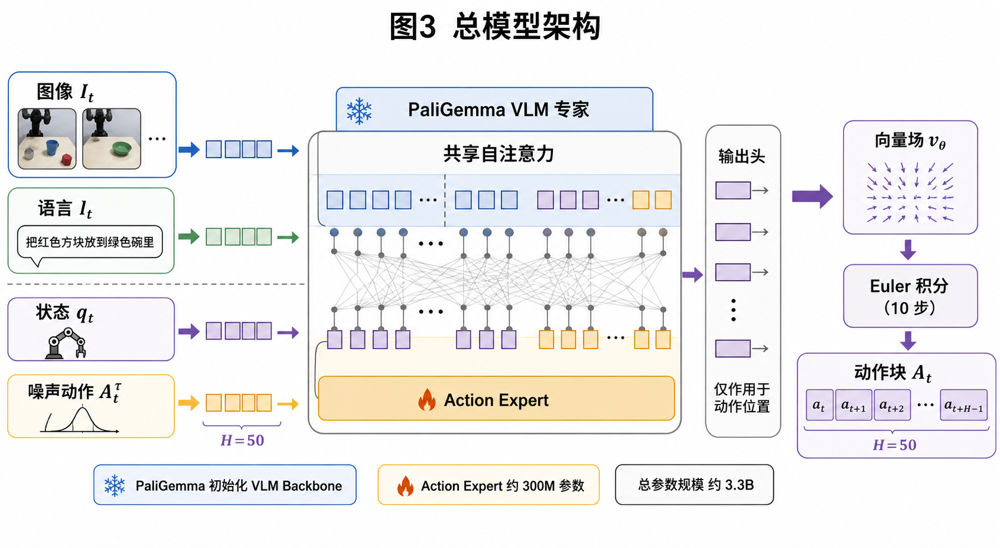
先看哪里：先区分蓝色 VLM 路径和橙色 Action Expert 路径。
- 模块作用：VLM 处理图像/语言，Action Expert 处理 。
- 公式变量：动作专家输出 。
- 训练关系：flow loss 主要作用在动作 token 输出上。
- 代码映射：
Pi0Model.forward组装 token、专家路由、输出头。 - 关键 shape：输入动作 token 数为 ，输出为 。
- 易误解点：Action Expert 不是独立小策略，它与 VLM token 通过注意力交互。
图4：数据表示与预处理
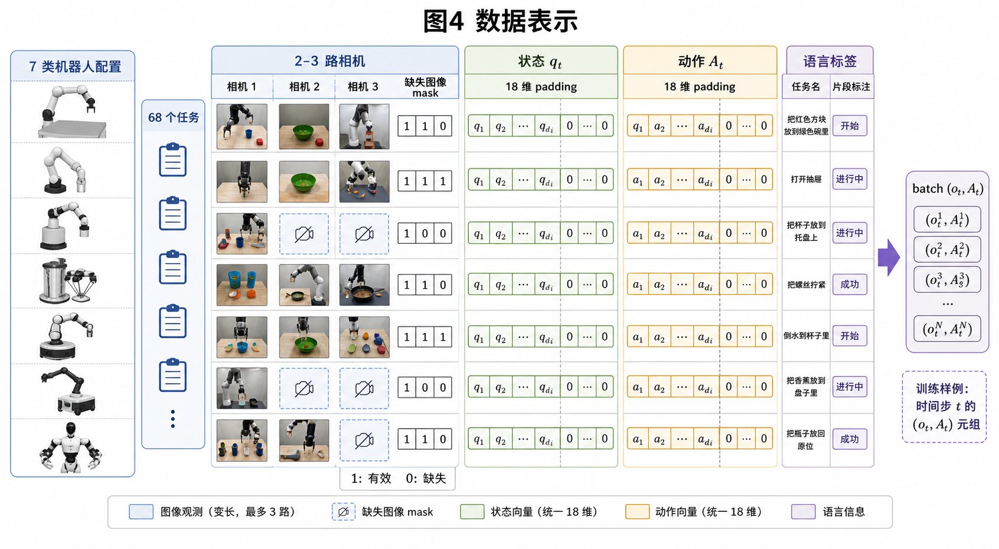
先看哪里：看不同机器人行如何被整理成同一套列。
- 模块作用：把 7 类机器人配置、不同相机数和动作维度统一。
- 变量含义： 是状态向量， 是未来动作块。
- 训练关系：统一 batch 才能做大规模 cross-embodiment training。
- 代码映射：
collate_fn负责 padding 和 missing-camera mask。 - 关键 shape：最大动作/状态维度 ，最多 3 个相机槽。
- 易误解点：padding 维度不能参与真实动作控制，训练和推理都要正确 mask 或保持零填充。
图5：VLM 编码器
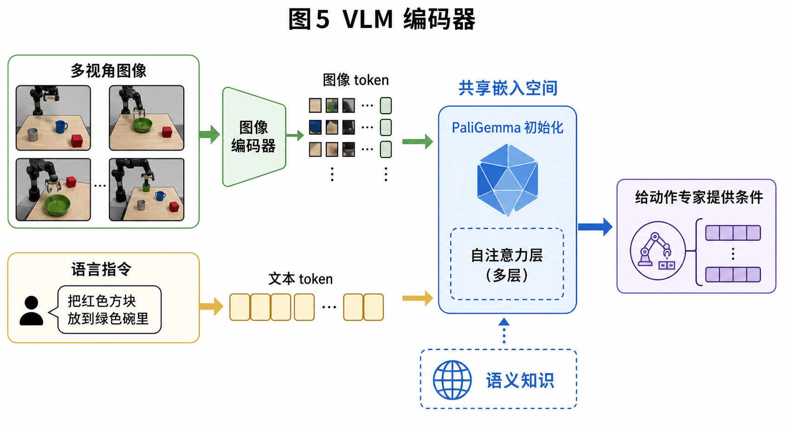
先看哪里：从图像 patch 和文本 token 汇入共享嵌入空间开始看。
- 模块作用：继承 VLM 的语义理解和视觉语言对齐能力。
- 变量含义： 是第 路图像， 是语言 token 序列。
- 训练关系：这些 token 作为动作预测的条件上下文。
- 代码映射：
ImageTextProcessor与VLMExpert。 - 关键 shape：图像 token 数取决于视觉编码器；语言长度为 。
- 易误解点：VLM 编码器本身不直接输出动作，动作由 action token 输出头给出。
图6：Action Expert 展开
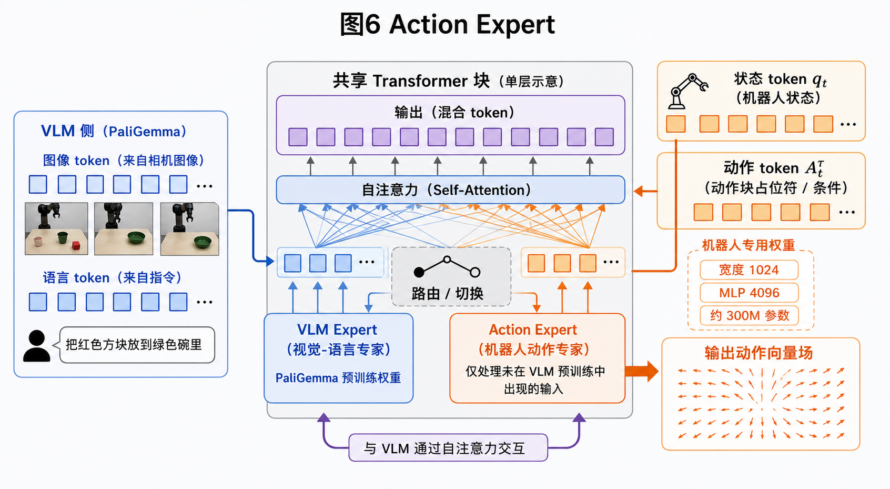
先看哪里：看 和 token 如何进入橙色专家。
- 模块作用：处理 VLM 预训练中未出现的机器人状态和动作 token。
- 变量含义： 是带噪动作块。
- 训练关系：Action Expert 接收 flow loss 的主要梯度信号。
- 代码映射：
ActionExpert，配置近似 width 1024、MLP 4096、约 300M 参数。 - 关键 shape：输入为状态 token 和 个动作 token。
- 易误解点：两个 expert 不是完全隔离，交互发生在 self-attention 中。
图7：Flow 动作 Token
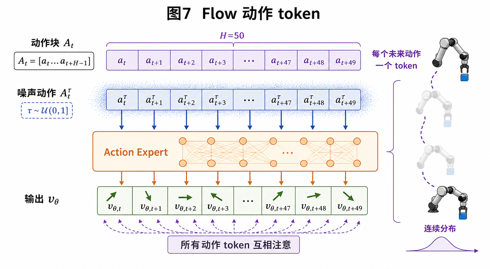
先看哪里：看上方动作块序列与下方向量场输出一一对应。
- 模块作用：把连续动作块表示成 transformer 序列位置。
- 变量含义：每个 slot 输入 ，输出对应 。
- 训练关系：所有 slot 的向量场误差一起形成 loss。
- 代码映射：
noisy_actionsshape 为[B,H,d]。 - 关键 shape：，每个 token 关联一个 维动作向量。
- 易误解点：这里的 token 是序列 slot，不是离散词表 token。
图8：τ 嵌入 MLP
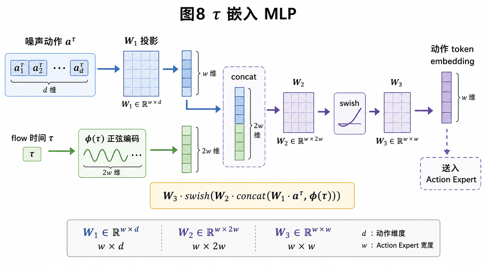
先看哪里：看 和 两路输入如何 concat。
- 模块作用：告诉模型当前动作处在噪声到真实动作路径的哪个时刻。
- 公式变量：。
- 训练关系：不同 对应不同去噪难度和向量场目标。
- 代码映射：
TauEmbedMLP.forward(noisy_actions, tau)。 - 关键 shape：，embedding width 为 。
- 易误解点： 不是只用于 loss，它参与动作 token 输入。
图9：Blockwise Causal Attention Mask
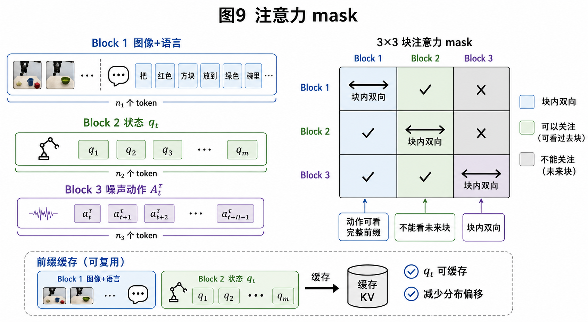
先看哪里：看右侧 3x3 mask 矩阵，理解哪些块能互相看见。
- 模块作用：保护 VLM 前缀不看机器人新 token，同时允许动作 token 看完整上下文。
- 变量含义：三块为 、、。
- 训练关系：正确 mask 决定模型是否按论文条件结构学习。
- 代码映射：
build_blockwise_causal_mask。 - 关键 shape：mask shape 通常为
[seq,seq]或 batch 扩展。 - 易误解点：动作块内部是双向注意力，不是严格逐动作 causal。
图10：预测头 / 输出头
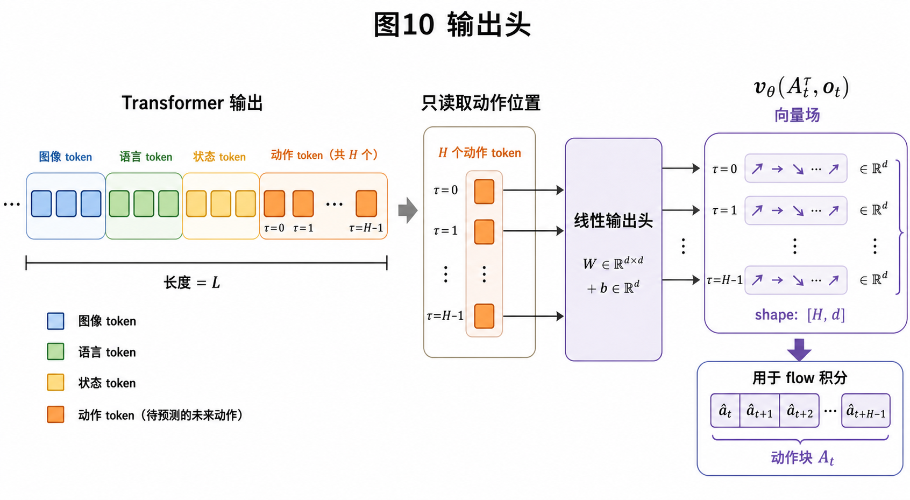
先看哪里：看 token 序列中被高亮的动作位置。
- 模块作用：将动作位置 hidden state 投影到连续动作维度。
- 变量含义：输出 。
- 训练关系：loss 只对这些动作输出计算。
- 代码映射：
action_hidden = hidden[:, action_positions]后接OutputHead。 - 关键 shape：输出 。
- 易误解点：不要把语言 token 或图像 token 的输出拿来回归动作。
图11：Conditional Flow Matching Loss
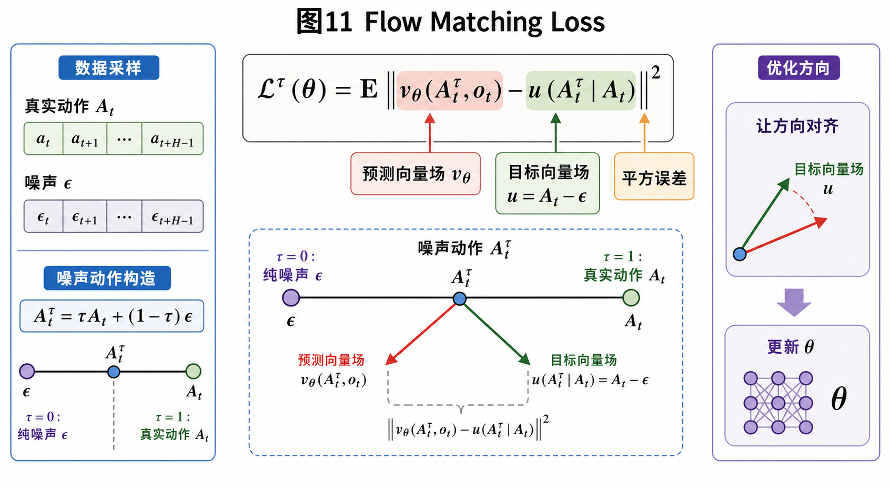
先看哪里：看同一个 noisy point 上红色预测箭头和绿色目标箭头。
- 模块作用：训练 Action Expert 学会每个噪声动作点的正确移动方向。
- 公式变量：。
- 训练关系：平方误差越小，预测向量场越接近目标向量场。
- 代码映射：
((pred - target) ** 2).mean()。 - 关键 shape：
pred和target都是[B,H,d]。 - 易误解点：这是 flow matching，不是行为克隆的直接 action L2 回归。
图12：线性高斯噪声路径
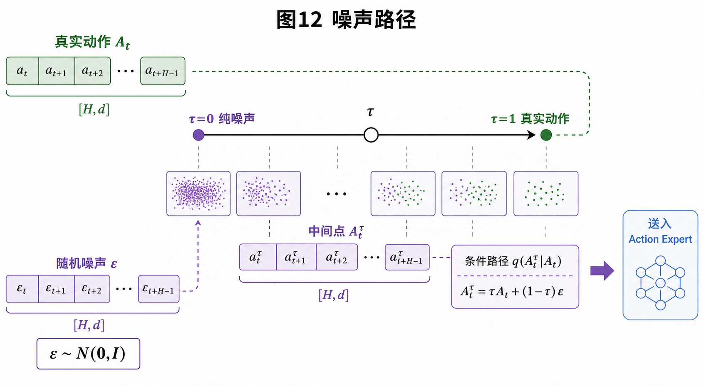
先看哪里：看从噪声端点到真实动作端点的插值线。
- 模块作用：构造训练时输入模型的 noisy action。
- 公式变量：。
- 训练关系：目标方向为 。
- 代码映射：
A_tau = tau * A + (1 - tau) * eps。 - 关键 shape： 全部为 。
- 易误解点：端点不能反写； 不是 clean action。
图13：τ 采样分布
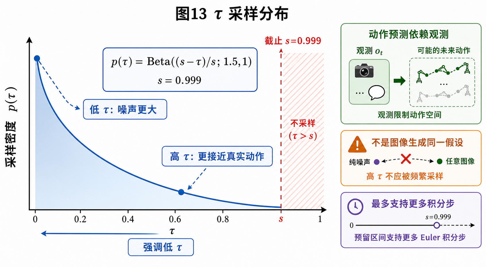
先看哪里：看曲线在低 区域的质量和 截止线。
- 模块作用：决定训练时模型更常见哪些噪声水平。
- 公式变量：。
- 训练关系：更多训练高噪声条件下的动作方向。
- 代码映射：
sample_shifted_beta(s=0.999)。 - 关键 shape： 可 broadcast 到 。
- 易误解点：论文不是默认均匀采样 。
图14：Loss 与模块连接关系
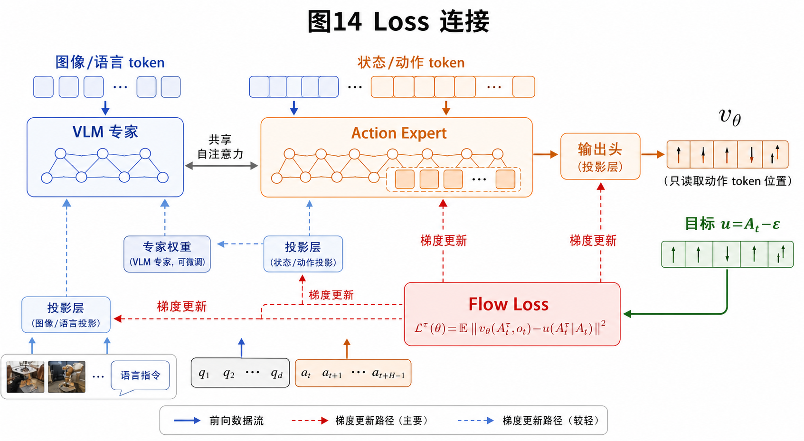
先看哪里：看底部 loss 到输出头和 Action Expert 的红色梯度箭头。
- 模块作用：说明公式中的误差如何落到模型结构上。
- 公式变量：loss 比较 和 。
- 训练关系：更新输出头、Action Expert、投影层和参与 fine-tuning 的 backbone。
- 代码映射：
loss.backward(); optimizer.step()。 - 关键 shape：loss 汇总所有 batch、时间 slot 和动作维度。
- 易误解点：不要额外加入论文未定义的 RL reward loss。
图15：训练 Forward 流程
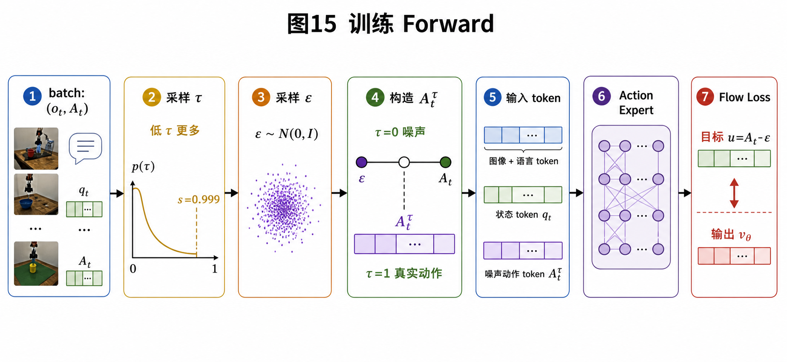
先看哪里：按图中 1 到 7 的编号顺序看。
- 模块作用：串起数据、噪声构造、模型前向和损失计算。
- 公式变量：、、、。
- 训练关系：每个 batch 都重新采样噪声和 。
- 代码映射：
compute_loss(model, batch)。 - 关键 shape：输入和目标统一为 。
- 易误解点： 采样应使用论文的低 偏置分布，而不是直接 uniform。
图16：Backward / Update
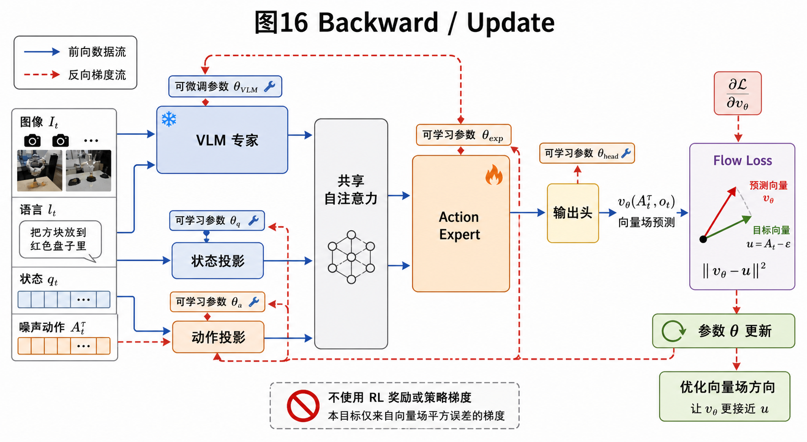
先看哪里：从右侧 loss 沿红色箭头反向追踪。
- 模块作用：解释优化信号如何让预测方向对齐目标方向。
- 公式变量： 来自平方误差。
- 训练关系：更新参数后，下次同类 noisy point 的向量场更准确。
- 代码映射：
training_step中 backward 和 optimizer step。 - 关键 shape：梯度 shape 与对应参数和激活一致。
- 易误解点：优化的是向量场，不是直接把每一步动作贪心拉到目标。
图17：推理流程与 Euler 积分
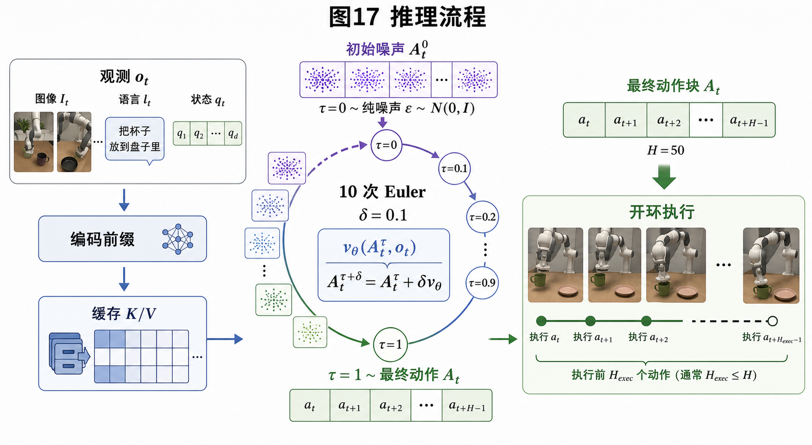
先看哪里：看左侧观测缓存，再看中间 10 次积分环。
- 模块作用：推理时生成动作块，而不是使用真实 。
- 公式变量：。
- 训练关系：训练好的向量场在推理时被积分成动作。
- 代码映射：
euler_sample(model, obs, steps=10)。 - 关键 shape：采样过程始终维护 。
- 易误解点：论文早期尝试 temporal ensembling 但最终选择开环执行 action chunks。
图18：Tensor Shape 流转
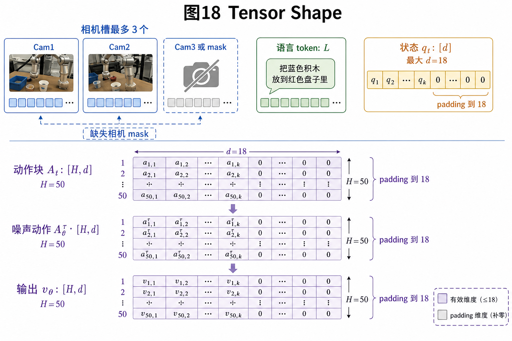
先看哪里：看相机槽、状态向量和动作矩阵三组 shape。
- 模块作用：帮助复现时检查 batch 是否与论文假设一致。
- 公式变量：、、 都是动作块张量。
- 训练关系：shape 错误会直接污染 loss 或控制输出。
- 代码映射：dataset collate、model forward、loss function 全部依赖这些 shape。
- 关键 shape：最多 3 个相机槽，，最大 。
- 易误解点：不要因为某些机器人只有低维动作就改变模型输出维度，应 padding 到统一维度。
图19：代码实现映射
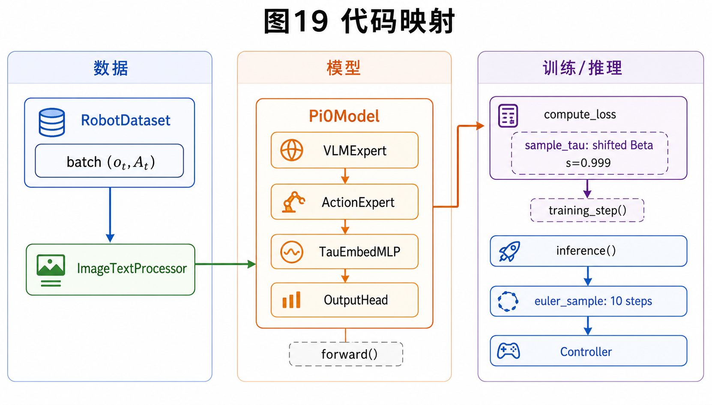
先看哪里：从左侧数据列走到中间模型列，再到右侧训练/推理函数。
- 模块作用：把论文概念转成工程文件和函数边界。
- 公式变量：
compute_loss负责构造 和目标 。 - 训练关系：
training_step调compute_loss，推理调euler_sample。 - 代码映射：
RobotDataset、Pi0Model、ActionExpert、TauEmbedMLP、OutputHead。 - 关键 shape：各模块接口都围绕 的动作块。
- 易误解点：图中是实现建议，不是官方 repo 文件名。
图20：复现风险与易错点
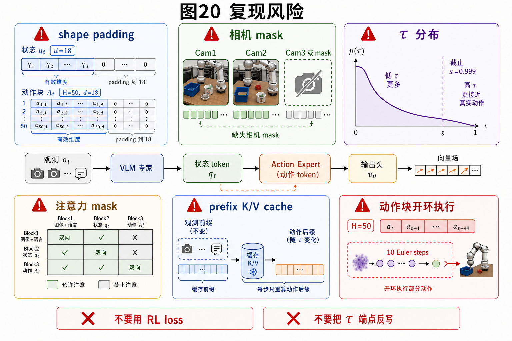
先看哪里：逐个检查六张风险卡片。
- 模块作用：把前 19 张图中的技术约束转成实现 checklist。
- 公式变量：重点防止 端点、 分布、目标向量场写错。
- 训练关系：任何一项错都会造成 loss 看似下降但策略机制不对。
- 代码映射：unit tests 应覆盖 padding、mask、tau sampler、Euler sampler。
- 关键 shape： 与相机 mask 是基本检查项。
- 易误解点：不要把 flow matching 当 RL，不要加论文没有的 reward loss。
第五步：关键公式 / Loss 专项解释
1. Conditional Flow Matching Loss
| 变量 | 来源 | 作用 | 代码位置 |
|---|---|---|---|
| 图像、语言、状态组成的观测 | 条件输入，约束可能动作 | batch["obs"] | |
| 数据集真实未来动作块 | 监督目标的 clean endpoint | batch["actions"] | |
| 由 构造 | 模型输入的 noisy action | A_tau | |
| 模型输出头 | 预测向量场 | pred | |
| 目标向量场 | 提供训练方向 | target = A - eps |
优化直觉：不是让模型直接输出动作，而是在 noisy action 空间的任意采样点上学习“应该往哪里走”。这个目标直接连接到图 10 的 action-token 输出头和图 14 的梯度路径。
2. Noisy Action Path
计算过程：先采样标准高斯噪声，再按 在线性路径上插值。端点必须保持正确： 是噪声， 是真实动作。代码里最常见错误就是把两个端点写反。
3. Euler Inference
推理时没有真实动作，所以从随机动作块开始，用训练好的向量场积分到 。论文实验使用 10 个 Euler steps，。
第六步：代码实现说明
推荐目录结构
pi0_repro/
data/
robot_dataset.py
collate.py
models/
pi0_model.py
action_expert.py
tau_embed.py
attention_mask.py
training/
losses.py
train.py
inference/
euler_sampler.py
controller.py核心类设计与伪代码
class Pi0Model(nn.Module):
def forward(self, images, lang_tokens, q, noisy_actions, tau, masks):
# images: list/tensor for up to 3 cameras
# q: [B, d], noisy_actions: [B, H, d], tau: [B, 1, 1]
img_lang_tokens = self.vlm_embed(images, lang_tokens, masks)
q_token = self.state_proj(q)
action_tokens = self.tau_action_mlp(noisy_actions, tau)
attn_mask = build_blockwise_mask(img_lang_tokens, q_token, action_tokens)
hidden = self.transformer_moe(img_lang_tokens, q_token, action_tokens, attn_mask)
action_hidden = hidden.action_positions
return self.output_head(action_hidden) # [B, H, d]Loss 计算
def compute_loss(model, batch):
obs = batch["obs"]
A = batch["actions"] # [B, H, d]
tau = sample_shifted_beta(A.shape[0]) # broadcastable to [B, H, d]
eps = torch.randn_like(A)
A_tau = tau * A + (1.0 - tau) * eps
target = A - eps
pred = model(obs.images, obs.lang, obs.q, A_tau, tau, obs.masks)
return ((pred - target) ** 2).mean()Training Step
def training_step(model, batch, optimizer):
optimizer.zero_grad(set_to_none=True)
loss = compute_loss(model, batch)
loss.backward()
optimizer.step()
return {"loss": float(loss.detach())}Inference
@torch.no_grad()
def euler_sample(model, obs, H=50, d=18, steps=10):
A = torch.randn(obs.batch_size, H, d, device=obs.device)
delta = 1.0 / steps
# cache observation prefix keys/values in an optimized implementation
for k in range(steps):
tau = torch.full((obs.batch_size, 1, 1), k * delta, device=obs.device)
v = model(obs.images, obs.lang, obs.q, A, tau, obs.masks)
A = A + delta * v
return A关键 Tensor Shape 表
| 张量 | 推荐 shape | 说明 |
|---|---|---|
| images | 最多 3 路相机 | 缺失相机槽用 mask |
| lang_tokens | 语言命令或 segment annotation | |
| q | padding 到 18 | |
| A | ||
| A_tau | noisy action chunk | |
| pred | 预测向量场 |
最容易实现错的部分
- 把 和 的端点反写。
- 把论文的 shifted beta timestep sampler 简化成 uniform sampler。
- 忘记对低维机器人 action/state padding 到统一维度。
- attention mask 方向写反，导致 VLM 前缀看到了未来动作 token。
- 推理时没有缓存 observation prefix，导致延迟过高。
- 误加入 RL reward 或 policy gradient loss。
第七步：学习路线
- 先看图 1-3：建立任务、动机和总架构。
- 再看图 4-10：理解数据表示、VLM 编码器、Action Expert、attention mask 和输出头。
- 接着看图 11-14：把 flow matching 公式和模型结构一一对应。
- 然后看图 15-17：理解训练 forward、梯度更新和推理积分。
- 最后看图 18-20：按 tensor shape、代码映射和复现风险检查实现。